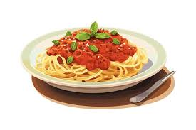

Sphagetti Bolognese

Ingredients
- 1 (16 ounce) package spaghetti
- 2 tablespoons olive oil
- 3 strips bacon, diced
- 1 large onion, finely chopped
- 1 stalk celery, finely chopped
Steps
- Fill a large pot with lightly salted water and bring to a rolling boil. Stir in spaghetti and return to a boil. Cook spaghetti uncovered, stirring occasionally, until tender yet firm to the bite, about 12 minutes; drain.
- Heat olive oil in a large pot over medium heat; add bacon. Cook, turning occasionally, until crisp, 8 to 10 minutes. Add onion, celery, carrot, and oregano to bacon; continue cooking until vegetables begin to soften, 8 to 10 minutes. Add garlic; cook until fragrant, about 2 minutes. Crumble in ground beef; cook and stir until no longer pink and completely cooked, 8 to 10 minutes.
- Pour vinegar over ground beef mixture; simmer until liquid evaporates, about 5 minutes. Stir in crushed tomatoes, tomato paste, and sugar; bring to a boil, season with salt and black pepper, then remove from heat. Stir in basil .